- Overview
- Adding a Gateway to the Process Map
- Connecting Elements with Gateways (From version 3.0.1 on)
- Connecting elements with gateways (Until version 3.0.1)
- Defining the Gateway Direction
- Defining the Gateway Type
- Gateway Considerations
- Gateways and the ProcessMaker Engine
- Gateways and Intermediate Events
- Gateway Routing Rules Priority
- Gateway Recommendations
- Exclusive Gateway
- Parallel Gateway
- Inclusive Gateway
- Gateway Configuration
- Converging Inclusive Gateway
- Inclusive Gateway Example
- Delete an Inclusive Gateway from the Process Map
- Gateway to Gateway
- Default Flow
Overview
Gateways are elements used to control how the flows among elements of the design interact. This means, they act like a mechanism that controls, defines and regulates flows based on routing rules set for this purpose. There are three types of gateways available in the process map of ProcessMaker v.3.0.
- Exclusive (XOR) Gateways
- Parallel (AND) Gateways
- Inclusive (OR) Gateways
Adding a Gateway to the Process Map
The three gateway shapes are in the shapes toolbox at the upper part of the designer.

To add a new gateway, simply drag and drop the element onto the process map.

Edit the description of the gateway by right clicking on it and selecting the Edit Label option, or double clicking on the gateway label.
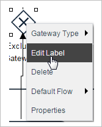
Enter the new label of the gateway after editing has been enabled.
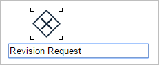
If no description is needed, simply erase the text and the gateway will be left blank. If a label is needed later, right click on the gateway and select the option Edit Label again.
Connecting Elements with Gateways (From version 3.0.1 on)
From version 3.0.1 on, the "Quick Toolbar" has been implemented in the elements of the Process Map, enabling the option to add the next possible element of the gateway by just clicking on it.
A gateway can be connected to a task, an end event, or to another gateway. The Connect option allows the flow from a gateway to connect to an element already added to the process map.
For example, to connect the gateway to a task, click on the task symbol, then drag and drop it onto the Process Map.
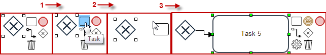
Connecting elements with gateways (Until version 3.0.1)
To associate an element with a gateway (without setting any configuration), hover the mouse over the element until little orange dots appear on the border. Click on any of the dots, and without releasing the button of the mouse, draw the line to the other element until an empty circle appears:
 |
 |
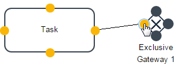 | 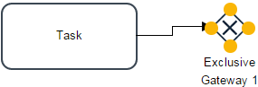 |
| Step 1 | Step 2 | Step 3 | Step 4 |
The same procedure must be done when connecting a gateway with an element. To modify or delete the routing rule, click over the arrow and the editing options will be enabled.

After the orange dots and green squares appear, delete the routing rule by pressing the Del key, or drag it from the yellow dots from the end of the line to another outcome or input position.
Defining the Gateway Direction
After a gateway has been added to the Process Map, its direction can be changed by right clicking on it and then selecting the Gateway Direction option.
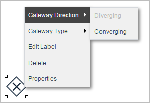
Note: Take into consideration that a gateway CANNOT be diverging and converging at the same time in the same process design.
- Diverging: A Diverging Gateway should have one incoming connection and two or more outgoing paths.

- Converging: A Converging Gateway allows the synchronization of multiple branches. It should have two or more incoming connections and one outgoing connection path.
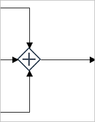
In any type of gateway remember that when a gateway has one input flow and several output flows then it will automatically be a "Converging" type gateway. But if a gateway has several input flows and only one output flow then it will automatically be a "Diverging" type gateway.
Note: To make complex route or more than one outgoing path, it is better to add activities such as the Script Task in the design rather than diverging gateways.
Defining the Gateway Type
The type of gateway can also be changed by right clicking and selecting the Type option from the gateway context menu. Select any of the three types and the gateway will be changed to the selected one.

Gateway Considerations
Take into account the following considerations before working with gateways.
Gateways and the ProcessMaker Engine
As it is well known, ProcessMaker 3 offers an easy-to-use friendly interface to design processes with all the needed resources to automate their execution. This interface is the Process Map where all BPMN2 elements and other elements are available for designing. Now, it is also possible to make any kind of design valid in BPMN2 but take into account that the ProcessMaker engine does not support the execution of all those BPMN2 elements or some of their combinations.
For gateways, the following combinations are not supported in the execution of processes for gateways:
- Start Events (any type of start event) -> Gateway
- (Exclusive, Inclusive or Parallel) Gateway -> Intermediate Email Event
Instead, the following are the combinations that the ProcessMaker engine DOES support:
- (Exclusive, Inclusive or Parallel) Gateway -> Task
- Task -> (Exclusive, Inclusive or Parallel) Gateway
- (Exclusive, Inclusive or Parallel) Gateway -> Sub-process (Synchronous)
- Sub-process -> (Exclusive, Inclusive or Parallel) Gateway
- (Exclusive, Inclusive or Parallel) Gateway -> End Event (Empty, Email or Send Message)
- Intermediate Event (any of them) -> (Exclusive, Inclusive or Parallel) Gateway
-
A diverging Gateway must always close its execution threads with a converging gateway of the same type. This includes all type of gateways (Parallel, Inclusive or Exclusive).
For example, when a flow is divided with a exclusive gateway, the resulting exclusive flow should be consolidated via another exclusive gateway when required.
-
A gateway cannot be diverging and converging at the same time. This practice is only supported in notation. Moreover, the ProcessMaker designer does not support it.
- Add Routing Rule. Click on this button to add a new routing rule, which is a new path in the workflow.
- Next Task Condition. Select the element where the flow should go if the condition in (3) evaluates to TRUE. The list of possible paths only includes the existing elements in the Process Map.
- Condition. Required field. Add the condition that, if evaluated as TRUE, will direct the flow to the element set in (2). For more information, see using conditions.
- @@ Button. To insert a case or system variable inside the condition, click on the [@@] button and select a variable from the list, then click on the Insert Variable button.
- Delete. Deletes the routing rule.
- Cancel. Closes the properties window.
- Save. Saves and applies all changes in the gateway configuration and then closes the Properties window.
- Route to Task 2:
@@decision == 'yes' - Route to Task 3:
@@decision == 'no' - Route to Task 4:
(@@decision == 'yes' && @@contractType == 'renewing') - Route to Task 4:
(@@decision == 'yes' && @@contractType == 'renewing') - Route to Task 2:
@@decision == 'yes' - Route to Task 3:
@@decision == 'no' -

-
If the design of the process includes a section like the figure above, set the asynchronous process(es) and the rest of the activities in a sequential order instead of using a parallel gateway.
- If one of the cases in a parallel path is cancelled, deleted or never completed, then the process will never route beyond the parallel converging gateway.
- All parallel converging gateways must have a single out-flowing connection to another element.
- Add Routing Rule: Click on this button to add a new routing rule. A routing rule controls what the next task, sub-process or end event will be (2) and the condition (3) that leads to those elements.
- Next task: Select the next element where the flow should go if its corresponding condition (3) evaluates to TRUE. The list of available elements only includes the tasks, sub-processes and end events that have already been created in the Process Map.
- Condition: Add a condition that, if evaluated as true, will direct the flow to the next task or end event set in (2). For more information, see using conditions.
- @@ Button: To insert a case or system variable inside the condition, click on the [@@] button to select a variable and then click Insert Variable.
- Delete: Deletes the routing rule.
- Cancel: Discards all changes and closes the window.
- Save: Saves and applies all changes to the gateway configuration and then closes the window.
- All converging inclusive gateways must have a single outgoing path.
- A converging inclusive gateway will wait until all the incoming paths whose conditions evaluated to TRUE have completed their activities before routing onto the next element in the process. If one of the parallel cases is cancelled, deleted or never completed, then the case will never route beyond the converging inclusive gateway.
- If the amount of the item is less or equal than $200, then the Operator is the one who approves or rejects the purchase.
- If the amount of the item is greater than $200 but less than $400, then the Supervisor must review to approve or reject the purchase.
- If the amount of the item is greater than or equal to $400 but less than or equal to $600, then Finance must review to approve or reject the purchase.
- If the amount of the item is greater than $600, then the Manager will directly review the purchase to approve or reject it.
- For the first task, right click on "Purchase item" and assign the DynaForm "Purchase Item Form" to the users Administrator, Jared (Operator).
- For the second task, right click on "Approve Purchase - Operator" and assign the DynaForm "Approve Purchase Form" to the user Dawn (Operator).
- For the third task, right click on "Review Purchase - Supervisor" and assign the DynaForm "Review Purchase Form" to the user Jensen (Supervisor)
- For the fourth task, right click on "Review Purchase - Finance" and assign the DynaForm "Review Purchase Form" to the user Craig (Finance)
- For the fifth task, right click on "Review Purchase - Manager" and assign the DynaForm "Review Purchase Form" to the user Gabriela (Manager)
- For the final task, right click on "Order Purchase - Manager" and assign the DynaForm "Order Purchase Form" to the users Administrator, Gabriela (Manager) for final approval.
- Task: Approve Purchase - Operator. Condition: @#amount <= 200
- Task: Review Purchase - Supervisor. Condition: @#amount > 200 && @#amount < 400
- Task: Review Purchase - Finance. Condition: @#amount >= 400 && @#amount <= 600
- Task: Review Purchase - Manager. Condition: @#amount > 600
- Item to purchase: Computers. Amount: 167.
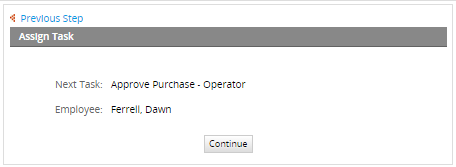
- Item to purchase: Laptops. Amount: 200.
- Item to purchase: Computers. Amount: 250.
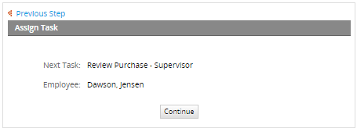
- Item to purchase: Computers. Amount: 360.
- Item to purchase: Tablets. Amount: 400.
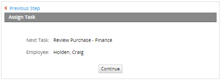
- Item to purchase: Computers. Amount: 450.
- Item to purchase: Tablets. Amount: 569.
- Item to purchase: Computers. Amount: 600.
- Item to purchase: Laptops. Amount: 1245.
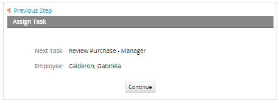
- Operator
- Supervisor
- Finance
- Manager
- If the amount is greater than or equal to $1000, then it will go to an inclusive gateway. The condition in the routing rule will be: @#amount >= 1000.
- If the amount is less than $1000, then it will go directly into the final task where the Manager can approve/disapprove the order of the item. The condition in the routing rule will be: @#amount < 1000.
- If the amount is greater than or equal to $1000 and less than or equal to $2000, then any Operator can review the case. The condition in the Routing Rule will be: @#amount >= 1000 && @#amount <= 2000.
- If the amount is greater than $2000 and less than or equal to $3000, then the Supervisor will review the case. The condition in the Routing Rule will be: @#amount > 2000 && @#amount <= 3000.
- If the amount is greater than $3000 and less than or equal to $4000, then Finance will review the case. The condition in the Routing Rule will be: @#amount > 3000 && @#amount <= 4000.
- If the amount is greater than $1000, then an Operator will be in charge of the next task.
- If the amount is equal to $1000, then an Operator will be in charge of the next task.
- If the amount is less than $1000, then a Manager will be in charge of approving or rejecting the case.
- If the amount is greater than $1000 and less than or equal to $2000, an Operator will be in charge of the next task.
- If the amount is greater than $2000 and less than or equal to $3000, a Supervisor will be in charge of the next task.
- If the amount is greater than $3000 and less than or equal to $4000, Finance will be in charge of the next task.
- Finally, if the amount is greater than $4000, the Manager will be in charge of approving or rejecting the case.
Gateways and Intermediate Events
From version 3.0.1.7 on, an Exclusive, Inclusive or Parallel Gateway can be executed along an Intermediate Event. An example on how these elements work together will be explained next. Connect a start event with a task and then add a gateway (exclusive, inclusive or parallel) and connect it to two intermediate events. Use the image below for guidance.
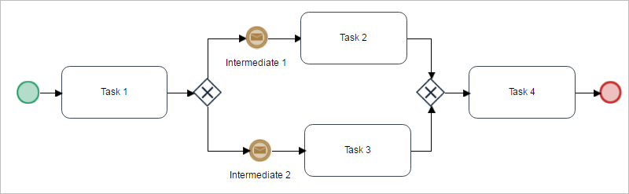
For this example the form executed in the first task will have only one field named "Amount" (create a variable that will go with this field). The gateway will evaluate the amount given in the form and determine whether it should go into the intermediate event "Intermediate 1" or "Intermediate 2". To do so, right click on the gateway and select Properties. A window will be displayed where the routing rule of the gateway and the conditions can be added. Add the conditions as seen in the image below.

For intermediate email events, read this section to configure an email account that will be used for this example.
After configuring the events, go to HOME > New Case and double click on the example process.
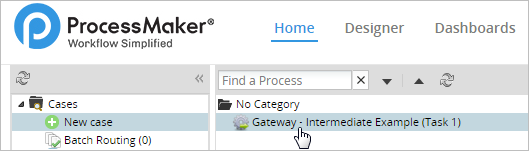
Add an amount in the range of 0 and 50. For this example, the amount 34 has been added. Click on the Submit button.
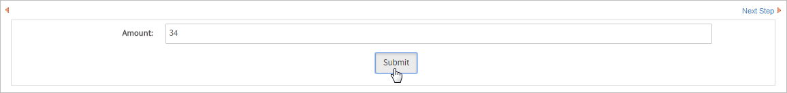
The evaluation in the gateway will route the case to "Intermediate Event 1" and will send the corresponding email to whom it was configured.
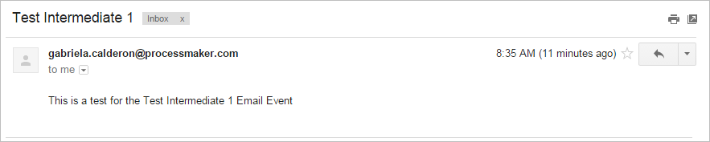
Test the example one more time by adding an amount greater than fifty. The amount chosen in this case is 67, which will be evaluated by the gateway and send the case to the "Intermediate 2" email event.

As seen in the image below, the test was successful and the email has reached the inbox of the person assigned to the event.
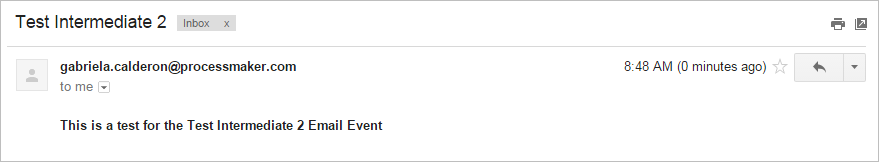
Note: Take into consideration that this support is available for new processes. For processes that had the Gateway - Intermediate Event design before v.3.0.1.7 the configuration must be saved again to work properly.
Gateway Routing Rules Priority
From version 3.0.1.5, it is possible to modify the order of the routing rules in the properties of the gateway. The routing rules are set by the design of the flow of the process in progress, so by default, they have the same order in which they where connected first. Now the order of the routing rules can be changed manually (if necessary) with the help of the drag and drop property, affecting the result of the conditions when running a case.
Right click on any gateway and select Properties. The routing rule window will open.
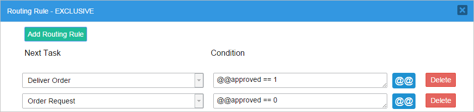
To drag and drop a condition, locate the mouse near the Delete button or between the Next Task and Condition fields. Click and do not release the mouse.
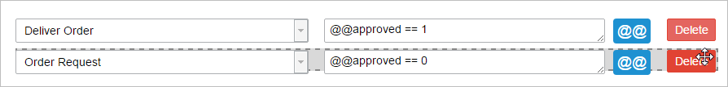
Drag the condition up or down and drop it wherever the conditions needs to be. As said before, the order will change the result of a running case; the condition dropped at the beginning will be the first priority.
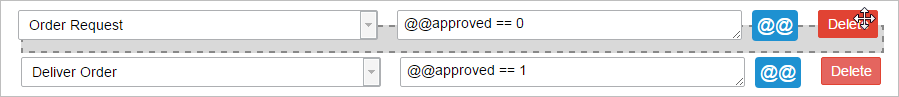
Gateway Recommendations
Take into account the following recommendations before working with gateways:
Exclusive Gateway
Exclusive gateways are used to select only one path between two or more tasks within a process workflow. The decision of which path the flow will take is based on the evaluation of conditions that define a unique outcome flow.
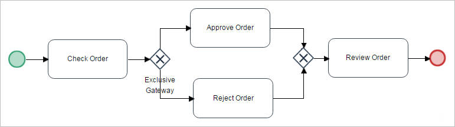
Gateway Configuration
To set the routing rules of the gateway, right click on the gateway and select Properties from the gateway context menu.

A new modal window will open where the definition of the path to the next element(s) in the workflow is set as well as their corresponding conditions:
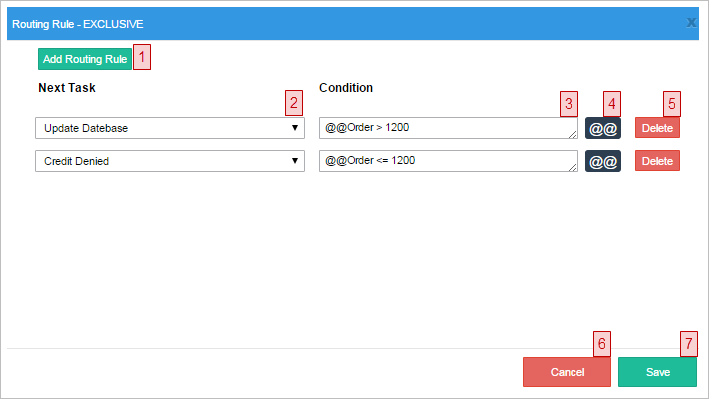
Where:
For each possible route out of the exclusive gateway, the conditions are evaluated in the order they are listed in the Properties window. The first route whose condition evaluates to true will be taken, and the remaining conditions in the gateway will not be evaluated. Make sure that at least one of the conditions will always evaluate to true or set a default path to handle situations where all conditions evaluate to false.
Note: If several conditions in the gateway use the same variable, make sure that conditions higher in the list do not exclude conditions lower in the list. For example, an exclusive gateway has the following routing rules and their conditions:
If @@decision is set to 'yes', then the condition for Task 2 will evaluate to true and that route will be taken. The gateway will never get to the condition for Task 4 to evaluate it. The solution is to move the routing rule for Task 4 to the beginning of the list, so it is evaluated first:
Exclusive Gateway Example
In the example below, the first task “Check order” will be connected to an exclusive gateway that will select between the tasks "Approve Order" and "Reject Order" depending on the documentation provided by the requester of a credit loan. The Dynaform assigned to the task has a radio (group) field where the reviewer will choose "Yes" or "No", and the value will be saved in the variable @@DocumentationReview, which is related to the field.
To set the conditions that will be evaluated, right click on the gateway and select Properties. A new window will be opened where the routing rules for the gateway will already be added. Define the conditions to be evaluated before defining the next task in the flow.

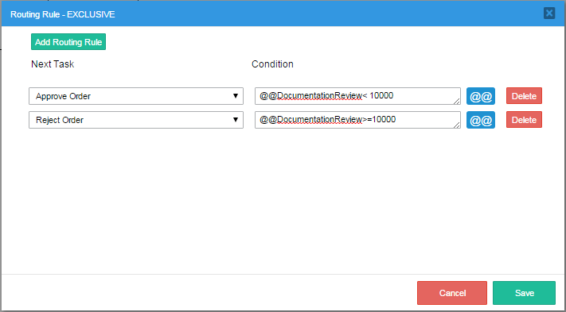
When running cases, the task "Check Order" will be executed first, and after the data is submitted, the flow will go to the gateway where the conditions previously defined will be evaluated.
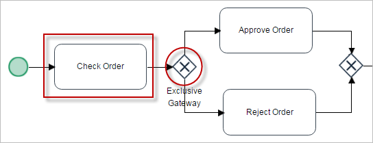
If the requester has the correct documentation, the radio field will be marked as "Yes" and the flow will go to the task "Approve Order".
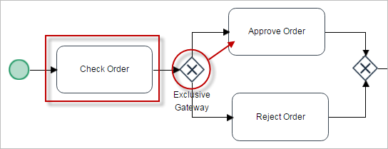
On the contrary, if the field is marked as "No" (when the requester does not have the required documentation) the flow goes to the task "Reject Order".

Parallel Gateway
A Parallel Gateway is also called a “Fork” because it’s divided into many tasks with one objective. Parallel gateways are different to other gateways, simply because they do not evaluate conditions or events. Instead, a parallel gateway is used to represent two tasks that are going to be executed at the same time. Parallel gateways are used to either split the workflow into multiple parallel paths or merge multiple parallel paths. Unlike the other types of gateways, no conditions are evaluated by parallel gateways. Use the same gateway element to split (diverging) and join (converging) paths.
In the figure below, the workflow arrives at a diverging parallel gateway and splits into 2 parallel tasks ("Verify Employment References" and "Check Credit") that will be executed at the same time.

When a case is routed through this parallel gateway, the following screen will be displayed to the user.
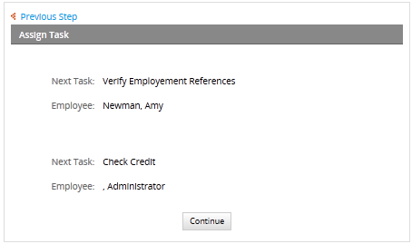
"Verify Employment References" and "Check Credit" will appear as two separate cases in the assigned users' inboxes. The two different tasks must be completed by their assigned users before the case goes to the next task. There is no special order in which they need to be completed. In the example, both tasks must be completed in order to continue to the task "Evaluate Application", otherwise this last task won't appear in the user's inbox.
Take into consideration that when working with parallel gateways, the input and output gateway must be the same. Meaning that if working with a Parallel gateways then the diverging and converging path must use the same gateway (Parallel - Parallel) and cannot mix Parallel with Exclusive or Parallel with Inclusive. In case this happens then an error will occur when running the case.

Note 1: The ProcessMaker engine does not support the execution of a sub-process configured as "asynchronous" after a parallel gateway.
Note 2: Take also into account that the ProcessMaker engine does not support the execution of a parallel gateway and an email event without a task in between those elements.
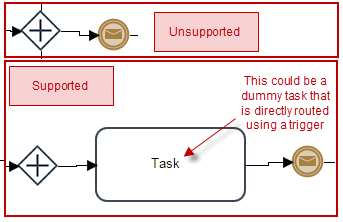
Converging Parallel Gateway
A parallel converging gateway merges parallel paths in a process. It waits until all the parallel paths have been completed before routing to the next activity in the process.
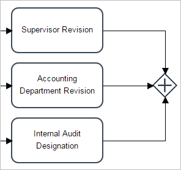
The parallel paths created by parallel gateways can have as many or as few activities as needed. In the following example, the first parallel path has one task, the second has two and the third has three:
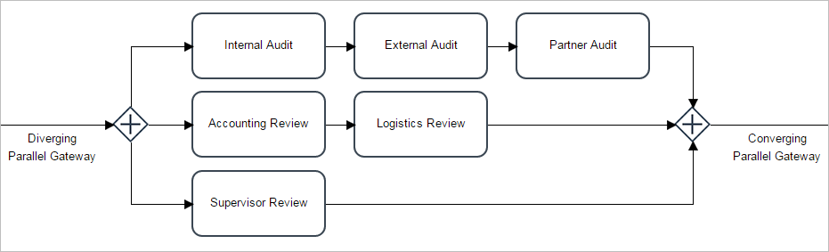
Take into consideration the following points:
It is important that parallel paths be merged with converging parallel gateways, otherwise, the activity after the paths merge will be executed multiple times. The image below is an example of converging parallel gateways. It is recommended to use the parallel gateway in the way the image shows, because it conforms to the BPMN standard and uses a parallel gateway to explicitly state where the workflow splits into multiple paths.
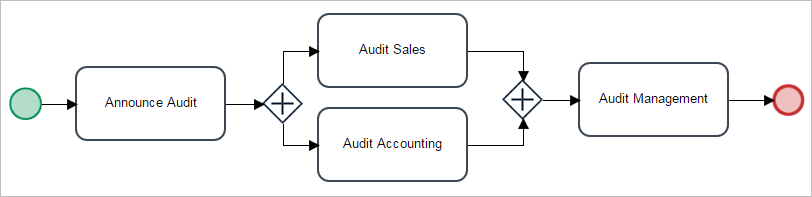
Parallel Gateway Example
In the following example, the first parallel path has one task, the second has two and the third has three.
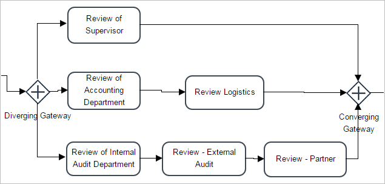
Take into consideration the points mentioned before. So the parallel gateway has a task that needs to go through two, three or more task at the same time as shown in the image, the gateway is diverging to three different tasks. This means that three different employees will be working on three different tasks to achieve a goal.
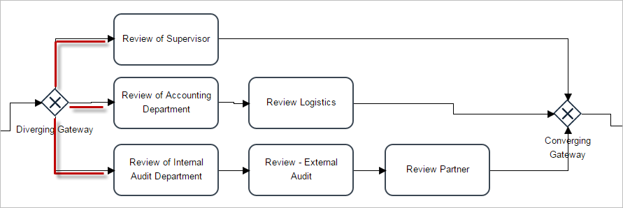
For example, the first task “Review of Supervisor” will be assigned to the Supervisor, the second task “Review of Accounting Department” will be assigned to the Department of Finance and Treasury and finally the third task “Review of Internal Audit Department” will be assigned to the Audit Department.
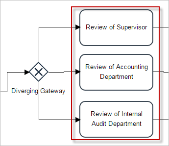
Delete a Parallel Gateway from the Process Map
To delete a parallel gateway from the Process Map, right click to access the gateway context menu then choose the Delete Parallel option.
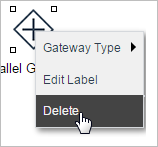
Inclusive Gateway
Inclusive gateways are used to create one or more parallel flows based on one or more conditions that evaluate to "TRUE". Use the same gateway element to split and join paths.
Notice that when working with inclusive gateways the input and output gateway must be the same. Meaning that if working with inclusive gateways, then the diverging and converging path must use the same gateway (inclusive - inclusive) and cannot mix inclusive with exclusive or inclusive with parallel. If this happens, an error will occur when running the case.
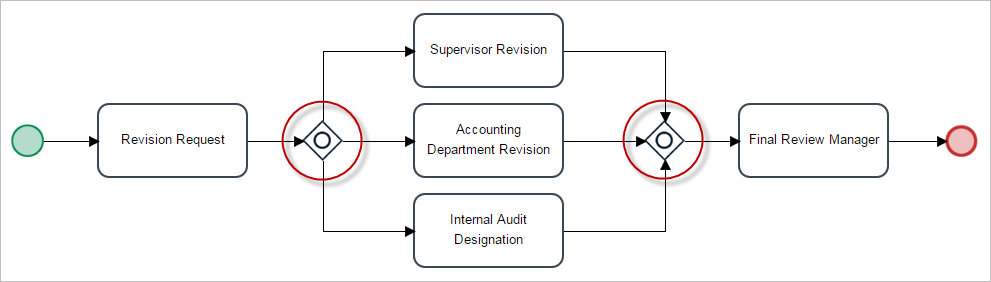
Gateway Configuration
To configure the gateway, right click and select Properties in the gateway context menu.
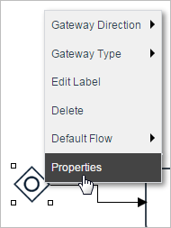
A modal window will open to configure the routing rules for the inclusive gateway.
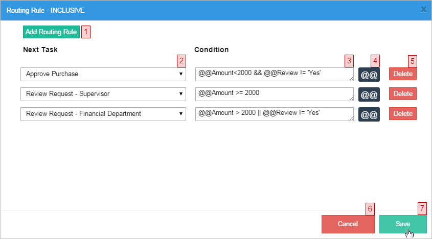
Converging Inclusive Gateway
A converging inclusive gateway merges all incoming parallel paths into a single outgoing path before routing onto the next element in the process. Take into consideration the following points:
When an inclusive gateway is used to merge together several paths, its type is automatically sets as converging. For example, in following design:
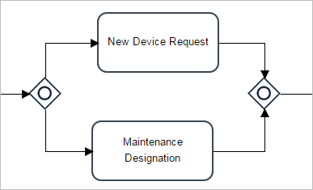
When the execution of the process arrives at the first gateway, it will route the flow to "Maintenance Designation" and/or "New Device Request", depending on whether their conditions evaluate to TRUE or FALSE. If both are TRUE, then two cases will appear in the inbox. Only after completing both parallel tasks (it doesn't matter which is completed first), the two parallel paths will merge at the converging inclusive gateway, and then the process will move onto the "Operation Send" task.
Inclusive Gateway Example
Inclusive gateways tend to be more complicated than exclusive and parallel gateways, therefore, this example will be very detailed. The process for this example is the following: A specific item is requested to be bought, the list of items includes "Computers", "Laptops", "Tablets" and "Smartphones". The following conditions made for the purchase of the item will be added into the inclusive gateway:
Remember, when working with inclusive gateways more than one condition can be True. So more than one person can review the purchase at the same time, unless the conditions are set not to do this. When the inclusive gateway fulfills its purpose to select which task will follow next, the final step would be to order the purchase of the chosen item and finish the process.
Begin by creating a start event, connect it to the first task ("Purchase item"), then add an inclusive gateway that will select one path among four tasks (because of the conditions in the gateway): "Approve Purchase - Operator", "Review Purchase - Supervisor", "Review Purchase - Finance" and "Review Purchase - Manager". Connect the "Review Purchase - Manager" task directly to the "Order Purchase - Manager" task. Add an inclusive gateway to converge all the threads leading from the "Approve Purchase - Operator", "Review Purchase - Supervisor", "Review Purchase - Finance" and "Order Purchase - Manager" tasks. Right click on the first inclusive gateway and set the default flow of the gateway to the task "Review Purchase - Manager", in case none of the conditions are True. That is why the "Review Purchase - Manager" task will directly approve the purchase and finish the process. Finally, connect the second gateway to the task "Order Purchase - Manager". The image below shows what the process should look like.

Create the variables "Items" (string, with options "Computers", "Laptops", "Tablets" and "Smartphones"), "Amount" (float), "Approved" and "reviewApproved" (string with the options "Yes" and "No").
Create a new Dynaform named "Purchase Item Form", save and open it in the DynaForm designer. Add a dropdown control named "Item to purchase:" and relate it to the variable "Items". In the same Dynaform add a Textbox control with the label "Amount:" and relate it to the variable "Amount" created in the beginning. Finally, add a submit button at the end.
The design of the DynaForm should look like this:
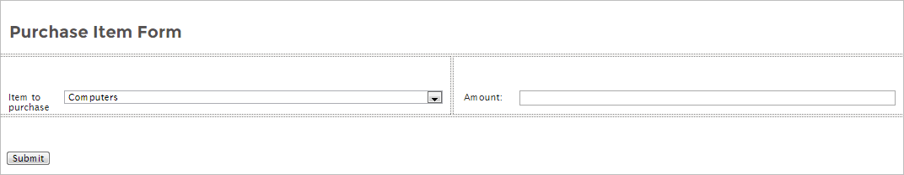
Now, assign this DynaForm to first task and create three more Dynaforms with the same structure for the other tasks. To avoid repeating the same steps and creating three new Dynaforms from scratch, the best way is to export and import the first Dynaform and just edit and add the few controls needed. Export the first DynaForm "Purchase Item Form", then create a new Dynaform named "Approve Purchase Form" and import "Purchase Item Form". Add a dropdown control named "Approve Purchase" and relate it to the variable "Approved". The fields "Item to purchase" and "Amount" should be configured as "View" in the property Display Mode of both field controls.
Now for the third Dynaform, repeat the same steps as before. Create a new Dynaform "Review Purchase Form" and import the "Purchase Item Form". Add a Title control labeled "Review Purchase" and a dropdown control named "Reviewed for Purchase?" related to the variable "reviewApproved". The fields "Item to purchase" and "Amount" should be configured as Mode View in the properties of both controls. Finally create the dynaform "Order Purchase Form" and import "Purchase Item Form". Add a title control labeled "Approval" and a dropdown control labeled "Order Purchase" with options "Yes" and "No". The fields "Item to purchase" and "Amount" should be configured to Mode View in the properties of both controls.
For a more detailed explanation, refer to these pages:How to Create your First Process, Dynaforms, Dynaform Field Controls, Variables and Importing and Exporting DynaForms
Configure the Steps and Assignment Rules for all tasks.
Now the most important step for inclusive gateways is to add the routing rules. For this, right click on the first inclusive gateway and select Properties. A new window will open where the tasks will be automatically, but the conditions must be added. These are the conditions for each task:
Right click on the inclusive gateway to open the routing rules window. The image below shows what the conditions should look like to run this process correctly.
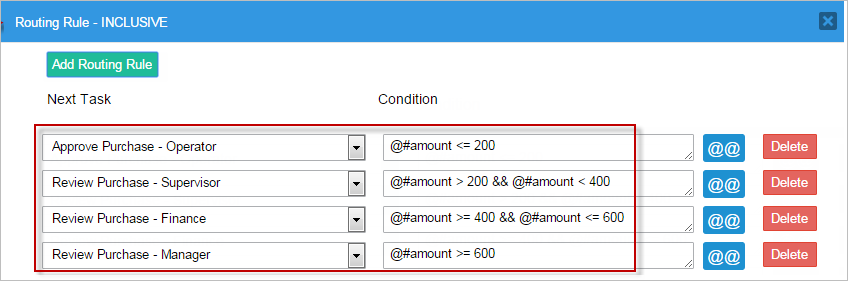
Also, right click on the inclusive gateway and select the task "Review Purchase - Manager" as the default flow. In the case all conditions inside the gateway are evaluated as False, the manager will review the purchase requests sent in the process.

Configure the other inclusive gateway by right clicking and setting the Gateway Direction to Converging.
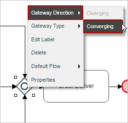
All configurations needed for this example to work properly have been made. Next, run a case to test every condition added to the routing rule of the inclusive gateway. To run a case, go to Home > New Case and double click on the name of the process.
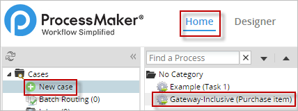
All options must be working according to the conditions in the gateway (choose any item for each option, the list is just for guidance):
The images above show that each and every condition made in the inclusive gateway is working correctly.
The routing rule conditions can be configured to be evaluated by two tasks at the same time. For example, if two tasks have similar conditions as in the image below (amount <=600 and amount >=600), the result should choose the users in both tasks to work in the case if the amount is set to 600.
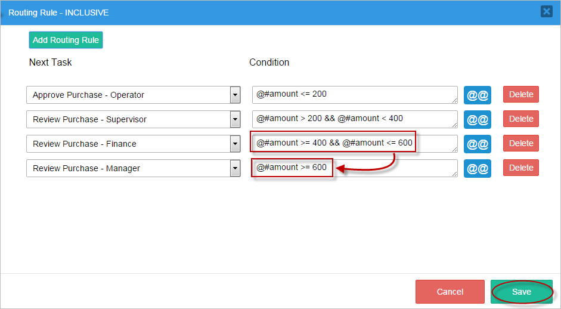
When running a case and choosing an amount equal to 600, the condition is evaluated as True for two tasks; therefore, the process will be routed to both tasks at the same time.

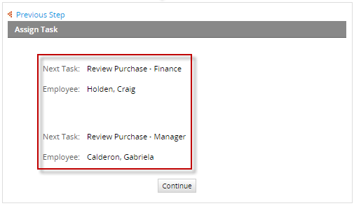
Delete an Inclusive Gateway from the Process Map
To delete an inclusive gateway from the Process Map, right click to access the gateway context menu and select the option Delete.
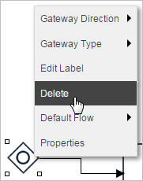
Gateway to Gateway
It is now possible to execute Gateway to Gateway connections, and the following example will demonstrate how to make a connection between an exclusive gateway and an inclusive gateway.
| Note: Take into consideration that when including gateways in a process, the order of opening and closing gateways must be respected. The mathematical rules governing brackets are a good example of the expected behavior of gateways. If a set of parenthesis was opened, it must be closed in the right order. Parent parenthesis cannot be closed without first closing all the child parenthesis. |
Process Description: The purchase of two items is required but the cost of each item needs to be checked before buying them. The purchase will be reviewed by the:
Remember that an exclusive gateway will choose only one alternative path while the inclusive gateway can choose one or more parallel flows based on the conditions given in the properties of the gateway.
The process will start by asking what item to buy and adding the price of that item. Then, an exclusive gateway will have the conditions set to see if the item costs less than $1000, then it will be approved or disapproved by the Manager and the item will be purchased depending on the Manager's decision. If the item costs more than or exactly $1000, then it will have to go into an inclusive gateway where a set of conditions will be added and the tasks will be divided into three. Then, an Operator, Supervisor and Finance can review the purchase. If none of the conditions are True, then by default the inclusive gateway will be reviewed by the Manager. The cost will be referred to as "amount". The process is shown in the image below:
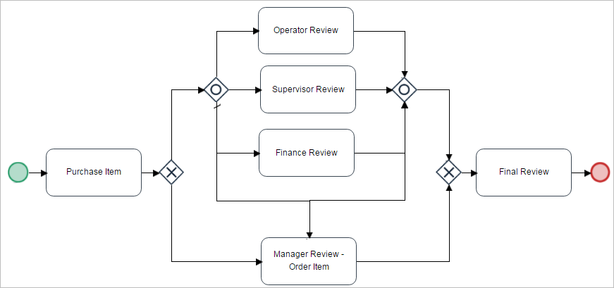
Note: When using Gateway - Gateway designs make sure to understand the design of normal gateways first before using this for a delicate process. If not used properly it may cause different errors when running a case. Also, when using conditions, make sure to understand what they do before testing a case.
Create a float-type variable named "amount".
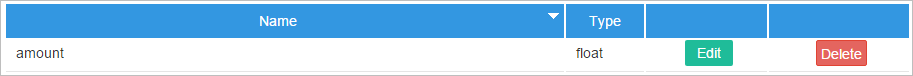
Create three Dynaforms, the first will have a dropdown control labeled "Item" and a textbox labeled "Amount" that is assigned the "amount" variable. This is the step for the "Purchase Item" task.
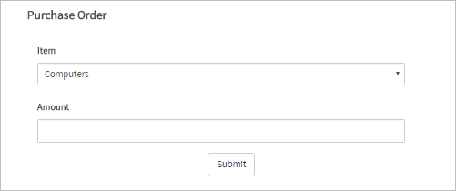
The second will have a dropdown control labeled "Approve?" with the options "Yes" and "No". This is the step for the "Operator Review", "Supervisor Review" and "Finance Review" tasks.
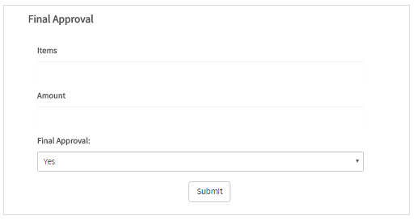
Finally, the third one will have a dropdown control labeled "Final Approve?" to end the process. This is the step for the "Manager Review - Order Item" task.

Proceed to add the Steps and Assignment Rules for all tasks.

Now, the conditions in the exclusive gateway are the following:
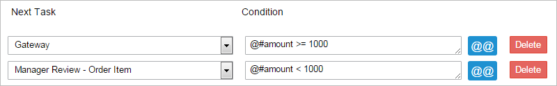
The conditions for the inclusive gateway are the following:
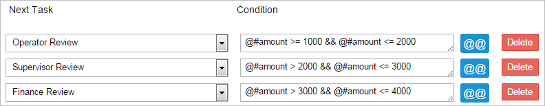
Run the case by going to Home > New Case, and double click on the case to start it.
Gateway to Gateway connections have many options to be tested according to the number of conditions. To prove the Gateway to Gateway connection works, several tests need to be made.
The conditions for the exclusive gateway are the following:
Now, the inclusive gateway conditions should also be met. The conditions tested are the following:

Default Flow
The Default Flow of the gateway defines where the flow should go in case all conditions inside the gateway are evaluated to False.
When the default flow of a task is defined, its routing rules are no longer shown in the Routing Rules window because a condition isn't needed anymore. Therefore, if there was a condition setup for that flow, the condition will be cleared.
To set the default flow, first right click on the gateway and select the option Default Flow and choose an element. Then, add the necessary conditions to the other tasks inside the gateway properties. Take into account that this option is enabled in the gateway context menu only when the gateway has routing rules established in the design (when the gateway is connected to other elements in the design).
Select the task where the flow should go by default. The line that connects the gateway with the task set by default will be marked with a (\) mark.

For example, the task "Review Order" was set as default, therefore, when right clicking on the gateway and selecting Properties, the routing rule will appear as the default flow and a condition is no longer needed, so the field will be shown as disabled.

Delete a Default Flow from the Process Map
In previous versions, one had to erase the connection line to delete a "Default Flow". From version 3.0.1.5 there is a new option, the default flow added can be easily erased by right clicking on the gateway and selecting Default Flow - None. The default flow will be erased. See the images below for guidance.